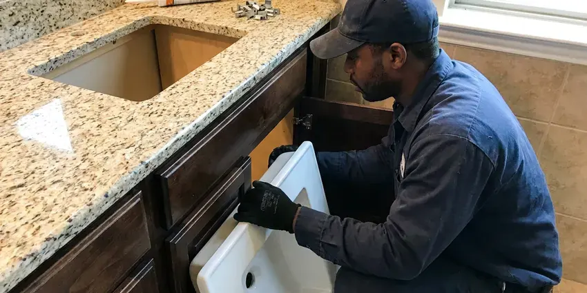

Toilet Repair in Harrisonburg, VA
From a flapper chain that came loose to a flange that cracked, our plumbers fix toilets in Harrisonburg, VA and test every flush before leaving.
- Dye-Tested Before We Leave
- Guaranteed Repairs
- Live Phone Answering
- Flappers and Seals On Hand

Get Your Toilet Repaired Today in Harrisonburg, VA
Most toilet repairs are finished on the first trip with parts from the truck.
Same-Day Toilet Repair in Harrisonburg, VA
FBN Plumbing fixes toilets across Harrisonburg, VA, from a flapper that will not seal to a wax ring that has been leaking into the subfloor for a year. We test the fill valve, flapper, flush valve and supply line before we decide what to replace. Nothing gets swapped on a guess. Most of these jobs are done in less than an hour, parts included.
Work we handle every week:
- Find and fix leaks at the tank and base
- Rebuild tank-to-bowl seals and bolts
- Replace failed flappers and fill valves

Additional Bathroom Plumbing Services in Harrisonburg, VA
From toilets to showers, our bathroom plumbing team in Harrisonburg, VA repairs, installs, and replaces every fixture with clean, code-compliant work.


Customers
Why Choose FBN Plumbing for Toilet Repair in Harrisonburg, VA?
Putting off a running toilet raises the water bill every month and lets the flush valve seat wear rougher, which turns a ten-dollar flapper into a full flush valve replacement. Small now, bigger later. We stock both pieces so the fix happens on the first trip either way.
- Upfront Pricing, You get a flat price before any work begins.
- Matched Parts, Brand-specific flappers fit the seat where universal ones leak.
- Clear Pricing, The price you approve is what shows on the invoice.
Citywide Coverage
Every route is planned so a plumber is never too far from a toilet that is actively leaking. It keeps arrival times shorter than you might expect. A slow fill valve or a loose seat can wait for a time that works for you, including early morning slots.
Experienced Team
The FBN Plumbing crew is licensed and background-checked, and they wear shoe covers and lay down a drop cloth before the toilet comes off the floor. They clean up after. Old parts go in a bag you can inspect before we haul them away.
Safety-First Approach
Supply connections and flange attachment follow plumbing code, and we use corrosion-resistant closet bolts instead of reusing the old rusted ones. Old bolts snap. Brittle supply lines get replaced, not reused, because that is how a bathroom floods.
Trusted Certified Harrisonburg Plumbing Services Professionals
At FBN Plumbing, we take pride in licensed, certified plumbing services throughout Harrisonburg, VA. Those papers on the wall mean something. Our plumbers hold recognized industry credentials, and they follow strict safety and quality rules on every repair, installation and maintenance call we run.
Call Us Now PHCC Plumbing Contractor Recognition
PHCC Plumbing Contractor Recognition Better Business Bureau (BBB) Accreditation
Better Business Bureau (BBB) Accreditation Angi Certified Pro
Angi Certified Pro ISO 9001 Quality Management Certification
ISO 9001 Quality Management CertificationEveryday Toilet Repairs in Harrisonburg, VA
Cracked Tank and Supply Line Repair in Harrisonburg, VA
Braided supply lines last years, but the plastic nut on the toilet end can crack and a bulge in the braid means the inner hose is about to burst. We check every supply line on every visit. Bulges get replaced on the spot. Old vinyl or solid plastic lines get swapped for braided stainless with metal nuts.

Commercial Toilet Repair in Harrisonburg
Office and retail restrooms take more flushes in a day than a house sees in a month, so the parts wear faster and fail harder. Most commercial toilets use flushometer valves instead of tanks, and those need diaphragm kits and vacuum breakers from time to time. We carry Sloan and Zurn kits. If downtime is a problem, we can come in before you open or after you lock up.
Leaking Toilet Repair in Harrisonburg
Water on the floor can come from four places: the wax ring, the tank-to-bowl gasket, the supply line or sweat running off a cold tank. Each one needs a different fix. We dry everything and watch where the water shows up first, which takes about ten minutes and saves pulling a toilet that did not need it. A cracked bowl gets a replacement quote, not a patch.
Flush Valve Seat Repair in Harrisonburg
Scale on the flush valve seat is the reason a brand-new flapper sometimes keeps leaking, because the rubber cannot seal against a rough, crusted ring. Feel the seat with a finger. We clean it with a scrub pad, and if it is pitted we install a seat repair kit or a new flush valve. Then we set the float so the water stops about an inch below the overflow.
Emergency Toilet Repair in Harrisonburg, VA
An overflowing bowl in a one-bathroom house is an emergency, and so is a burst supply line spraying water across the floor at full house pressure. Shut the angle stop first. Turn the small oval handle behind the toilet clockwise until it stops, then call us so we can walk you through the rest. The first goal on site is stopping the water, then a permanent repair if the part is on the truck.
Toilet Brands We Service in Harrisonburg
Kohler, American Standard, TOTO, Gerber and Mansfield make up most of the toilets we open, and each one uses its own flapper size or flush valve design. The wrong flapper will leak. We read the model number cast inside the tank wall and stock the common ones on every truck.
Clogged Toilet Clearing in Harrisonburg, VA
Most clogs sit in the trapway, the curved channel cast into the porcelain, and a closet auger with a rubber-sleeved head clears them without scratching the bowl. Plungers miss some. If the auger comes back clean and the toilet still backs up, the blockage is further down the drain or in the main line. At that point we run a cable from the nearest cleanout or send a camera down to see it.

Toilet Leaking Through the Ceiling in Harrisonburg, VA
Water coming through the ceiling under an upstairs bathroom usually traces back to a failed wax ring or a cracked supply nut, and the drywall below holds the evidence. Stop using that toilet. The toilet comes up, the flange gets checked, and the bowl goes back on a new seal, then we show you how far the water traveled so you can decide about the ceiling.
Toilet Repair Near You in Harrisonburg, VA
Close by matters for toilets. A running tank can wait a day, but a supply line spraying water cannot, and our dispatch puts active leaks in Harrisonburg, VA ahead of routine calls. You get a call when the plumber is about thirty minutes out.
A local plumber knows that a Harrisonburg house built in the 1960s probably has a cast iron closet bend and a brass angle stop that has not been turned in decades. It changes how carefully we handle the shutoff. There is a spare quarter-turn stop on the truck for every toilet call in case the old one fails when we close it.
FBN Plumbing at a Glance
- Licensed and insured plumbers serving Harrisonburg, VA
- 24/7 emergency service with same-day scheduling
- Clear written estimates, no hidden fees
- 4.9-star rated by 798+ Virginia customers
Harrisonburg Map
Harrisonburg Information
- Population
- 51,082
- Area codes
- 540/804/571
- Service area
- Harrisonburg and towns within a 40 mile drive
- Nearby
- Charlottesville, Winchester, Lynchburg, Fredericksburg
A wax ring that lets go or a flush valve seat crusted with scale can leak quietly for months before anyone notices in a Harrisonburg home. Water hardness in Virginia varies by region, with more mineral-heavy water in the western limestone valleys and softer water closer to the coast. An early call keeps it a parts swap instead of a floor job.
Expert Services
Reach out to FBN Plumbing for reliable plumbing work done by licensed pros in Harrisonburg, VA.
Our Specialized Plumbing Services in Harrisonburg, VA
At FBN Plumbing, you get every kind of plumbing service from one company across Harrisonburg, VA. We go from leak detection all the way to full system installations, for homes and commercial buildings, and we do it quickly at a fair price. Here are the core services we offer:


How a Toilet Repair Visit Works in Harrisonburg, VA
At FBN Plumbing, every toilet repair in Harrisonburg, VA starts with a diagnosis.
Call or Book Online
Call (434) 230-6997 or use the online form. Tell us what the toilet is doing and we set a time window.
Test and Diagnose
The plumber runs a dye test and inspects the base before naming a cause.
Flat Price
You get a flat price for the repair and approve it before work starts.
Frequently Asked Questions About Toilet Repair in Harrisonburg
Most simple toilet repairs, a new flapper or fill valve, cost about $125 to $275 installed. Resetting a toilet on a new wax ring usually runs $175 to $350, and a flange repair can bring the total to $300 to $500. The price is set before we start.
Low water in the tank is the first thing we check, followed by a partly closed angle stop, scale in the rim jets, a clogged siphon jet and a partial clog in the trapway. Any one of those can do it. We test for each one before anything gets replaced, since a new flapper will not help a scaled jet.
It can, by a lot. A flapper leak that refills the tank every few minutes can waste thousands of gallons a month, and many people only notice when the water bill jumps for no clear reason. A dye test confirms it.
Usually, if the china is intact and it flushes cleanly. A toilet that uses 3.5 gallons or more per flush is a different case, since a 1.28 gallon WaterSense toilet can pay for itself in water savings over time, especially in a busy household. A cracked tank pushes the answer toward a new toilet.
Flush only paper, and keep wipes, floss, paper towels and cotton swabs in the trash where they belong. Deal with a running toilet as soon as you notice it, because the leak wears the flush valve seat rougher over time and turns a cheap flapper job into a full flush valve replacement. Check the supply line once a year.
Swapping tank parts or resetting a toilet on a new wax seal generally does not need a permit. Moving the drain or adding a new toilet usually does, and the rules come from local code, so they vary from one town to the next even within Virginia. We check before starting.
We do. Eljer, Briggs, Crane and Universal Rundle toilets still show up in older homes, and while some of their flush valves take odd parts, adapters and universal kits cover a good share of them. We will tell you if a part is no longer made.
Flapper and fill valve jobs take twenty to forty-five minutes. Pulling the toilet and resetting it on a new wax ring takes about an hour, and a flange repair adds another thirty to sixty minutes depending on what is under the floor. Deep clogs take longer.
Hear From Customers Who Hired Our Plumbing Experts

Patricia H.
We had a slab leak that two other companies could not find. FBN Plumbing located it in under an hour with a listening device. They rerouted the line through the attic instead of breaking up the floor, so we kept our kitchen tile.
Slab Leak Repair · Harrisonburg, VA
Carlos V.
Our house still had galvanized pipe, and upstairs the shower was a trickle. The crew repiped everything in PEX over three days and patched every drywall hole before they left. The pressure difference is night and day.
Repiping · Harrisonburg, VA
James P.
Our restaurant had a slow leak at the hand sink that was rotting the cabinet base. FBN Plumbing came in at six in the morning before prep, replaced the trap and both supply lines, and was packed up before my first cook clocked in.
Commercial Plumbing · Fredericksburg, VAMarcus H.
Grease from the fryer line kept clogging the kitchen drain at my diner. FBN Plumbing hydro jetted the line after closing, showed me the buildup on camera, and set us up on a quarterly cleaning so it does not catch us on a Friday again.
Drain Cleaning · Dale City, VATyler J.
We bought a taller comfort height toilet for my dad, who just had knee surgery. The plumber pulled the old one, found the flange was cracked, and replaced it before setting the new bowl. Took about two hours.
Toilet Installation · Dale City, VA
Sofia M.
Two new toilets went in during one visit. The tech set them on new wax rings and swapped the old supply lines. He also noticed our bathroom faucet dripping and replaced the cartridge while he was there. No mess left behind.
Toilet Installation · Centreville, VA